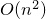

|
Topics in Optimization, Spring 2018
Course Outline
Time and location
Time: Tuesday, Friday 12:00 - 1:50pm
Location: DARRIN 236
Instructor
Yangyang Xu
Office: Amos Eaton 310
Office hour: TF 10:30am - 11:30am or by appointment
Email: xuy21@rpi.edu
Programming assignments
Reading materials
A fast iterative shrinkage-thresholding algorithm for linear inverse problems, Beck and Teboulle, 2009.
Gradient methods for minimizing composite functions, Nesterov, 2012.
Convergence rates of inexact proximal-gradient methods for convex optimization, Schmidt, Roux, and Bach, 2011.
Proximal Newton-type methods for convex optimization, Lee, Sun, and Saunders, 2012.
Robust stochastic approximation approach to stochastic programming, Nemirovski, Juditsky, Lan, and Shapiro, 2009.
Stochastic first and zeroth-order methods for nonconvex stochastic programming, Ghadimi and Lan, 2013.
Accelerating stochastic gradient descent using predictive variance reduction, Johnson and Zhang, 2013.
SAGA: A fast incremental gradient method with support for non-strongly convex composite objectives, Defazio, Bach, and Lacoste-Julien, 2014.
Minimizing finite sums with the stochastic average gradient, Schmidt, Roux, and Bach, 2017.
Convergence of a Block Coordinate Descent Method for Nondifferentiable Minimization, Tseng, 2001.
A block coordinate descent method for regularized multiconvex optimization with applications to nonnegative tensor factorization and completion, Xu and Yin, 2013.
Efficiency of coordinate descent methods on huge-scale optimization problems, Nesterov, 2012.
A unified convergence analysis of block successive minimization methods for nonsmooth optimization, Razaviyayn, Hong, and Luo, 2013.
Calculus of the exponent of Kurdyka-Lojasiewicz inequality and its applications to linear convergence of first-order methods, Li and Pong, 2017.
Worst-case Complexity of Cyclic Coordinate Descent:  Gap with Randomized Version, Sun and Ye, 2016.
Analyzing Random Permutations for Cyclic Coordinate Descent, Wright and Lee, 2017.
|